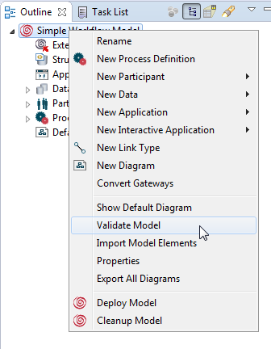
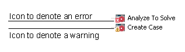
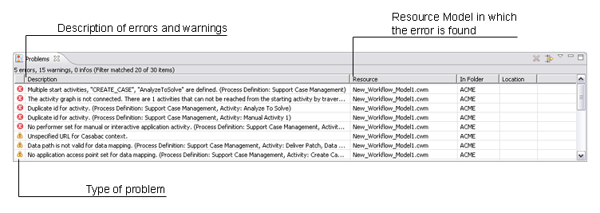
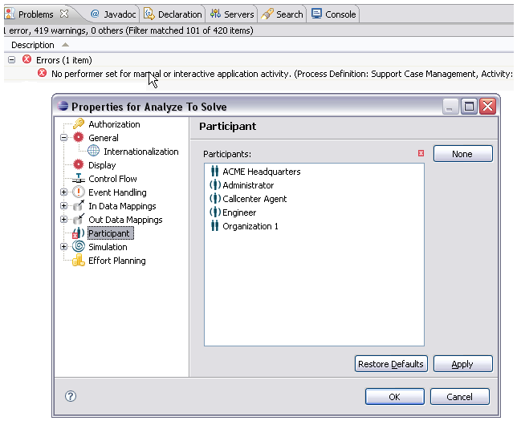
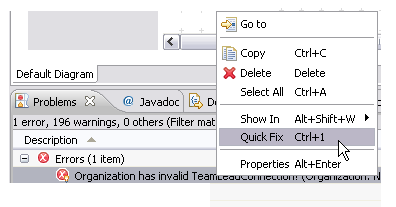
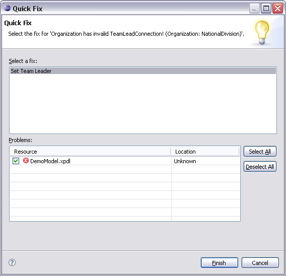

By default, a validation check on your workflow model is automatically performed by the Process Workbench after modifications. You can disable the auto validation by changing the enabling option in the Preferences dialog, as described in section Auto Validation of chapter Setting Process Manager Preferences.
To start a validation of your model by hand, right-click your model in the Outline View and select Validate Model in the context menu.

Figure: Validation of a Model
The errors and warnings are listed in the Problems view. They are also indicated in the Outline view with signs on the corresponding item symbols, like an exclamation mark for a warning or a cross for an error.

Figure: Icons to denote the Type of Problem
If a validation is performed the errors and warnings will then be logged in the Problems view. If the Problems view is not already opened in your perspective, add it by clicking on Window > Show View > Other... > Basic > Problems.

Figure: The Problems View
In some cases you may like to edit the concerned model element directly. You can open the property page of the concerned model element by double-clicking on the according error or warning entry.

Figure: Double-click an error entry to open the according element property dialog.
Some errors provide a quick-fix functionality for quickly fixing the issue. To use this functionality, right-click the error entry and select Quick Fix or simply use Crtl-1, for example:

Figure: Select Quick Fix to fix the Error.
The Quick Fix dialog opens, where you can fix the according error, e.g.:

Figure: Quick Fix Dialog
For detailed information on the Problems view itself, see the Workbench User Guide of the Eclipse Help.